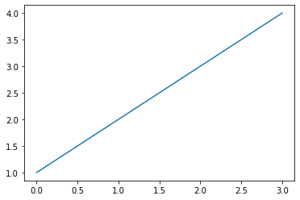
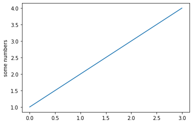
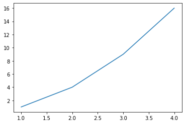
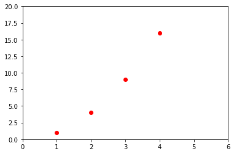
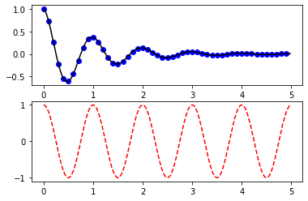

Matplotlib
Contents
Matplotlib#
 Anatomy of a Figure, https://matplotlib.org/3.1.1/gallery/showcase/anatomy.html
Anatomy of a Figure, https://matplotlib.org/3.1.1/gallery/showcase/anatomy.htmlGraphing#
%matplotlib inline
import matplotlib
import matplotlib.pyplot as plt
import numpy as np
plt.plot([1,2,3,4])
plt.show()

plt.plot([1,2,3,4])
plt.ylabel('some numbers')
plt.show()

fig, ax = plt.subplots()
ax.plot([1,2,3,4])
ax.set(xlabel = 'list index', ylabel='values',title='First Plot')
plt.show()

fig = plt.figure()
ax = fig.gca()
ax.plot([1,2,3,4])
ax.set(xlabel = 'list index', ylabel='values',title='First Plot')
plt.show()

fig, ax = plt.subplots(1,2,figsize=(10,5))
ax[0].plot([1,2,3,4])
ax[0].set(xlabel = 'list index', ylabel='values',title='First Plot')
ax[1].plot([1,4,9,16])
ax[1].set(xlabel = 'list index', ylabel='squared values',title='First Plot')
plt.show()

plt.plot([1, 2, 3, 4], [1, 4, 9, 16])
plt.show()

plt.plot([1,2,3,4], [1,4,9,16], 'ro')
plt.axis([0, 6, 0, 20])
plt.show()

# evenly sampled time at 200ms intervals
t = np.arange(0., 5., 0.2)
# red dashes, blue squares and green triangles
plt.plot(t, t, 'r--', t, t**2, 'bs', t, t**3, 'g^')
plt.show()

def f(t):
return np.exp(-t) * np.cos(2*np.pi*t)
t1 = np.arange(0.0, 5.0, 0.1)
t2 = np.arange(0.0, 5.0, 0.02)
plt.figure(1)
plt.subplot(211)
plt.plot(t1, f(t1), 'bo', t2, f(t2), 'k')
plt.subplot(212)
plt.plot(t2, np.cos(2*np.pi*t2), 'r--')
plt.show()

# Fixing random state for reproducibility
np.random.seed(19680801)
mu, sigma = 100, 15
x = mu + sigma * np.random.randn(10000)
# the histogram of the data
plt.hist(x, 50, density=1, facecolor='g', alpha=0.75)
plt.xlabel('Smarts')
plt.ylabel('Probability')
plt.title('Histogram of IQ')
plt.text(60, .025, r'$\mu=100,\ \sigma=15$')
plt.axis([40, 160, 0, 0.03])
plt.grid(True)
plt.show()

# Fixing random state for reproducibility
np.random.seed(19680801)
mu, sigma = 100, 15
x = mu + sigma * np.random.randn(10000)
n_bins = 50
fig, axs = plt.subplots(1, 2, tight_layout=True)
# N is the count in each bin, bins is the lower-limit of the bin
N, bins, patches = axs[0].hist(x, bins=n_bins)
# We'll color code by height, but you could use any scalar
fracs = N / N.max()
# we need to normalize the data to 0..1 for the full range of the colormap
norm = matplotlib.colors.Normalize(fracs.min(), fracs.max())
# Now, we'll loop through our objects and set the color of each accordingly
for thisfrac, thispatch in zip(fracs, patches):
color = plt.cm.viridis(norm(thisfrac))
thispatch.set_facecolor(color)
# We can also normalize our inputs by the total number of counts
axs[1].hist(x, bins=n_bins, density=True)
# Now we format the y-axis to display percentage
axs[1].yaxis.set_major_formatter(matplotlib.ticker.PercentFormatter(xmax=1))
axs[0].text(100, 625, r'$\mu=100,\ \sigma=15$')
axs[1].text(100, 0.027, r'$\mu=100,\ \sigma=15$')
plt.show()

import numpy as np
np.random.seed(19680801)
data = np.random.randn(2, 100)
fig, axs = plt.subplots(2, 2, figsize=(6, 6))
axs[0, 0].hist(data[0])
axs[1, 0].scatter(data[0], data[1])
axs[0, 1].plot(data[0], data[1])
axs[1, 1].hist2d(data[0], data[1])
plt.show()

# This import registers the 3D projection, but is otherwise unused.
from mpl_toolkits.mplot3d import Axes3D # noqa: F401 unused import
fig = plt.figure()
ax = fig.gca(projection='3d')
# Make data.
X = np.arange(-5, 5, 0.25)
Y = np.arange(-5, 5, 0.25)
X, Y = np.meshgrid(X, Y)
R = np.sqrt(X**2 + Y**2)
Z = np.sin(R)
# Plot the surface.
surf = ax.plot_surface(X, Y, Z)
plt.show()
/var/folders/qk/hv87dc8s27d5rgnhn23fklgh0000gn/T/ipykernel_30802/1297678667.py:5: MatplotlibDeprecationWarning: Calling gca() with keyword arguments was deprecated in Matplotlib 3.4. Starting two minor releases later, gca() will take no keyword arguments. The gca() function should only be used to get the current axes, or if no axes exist, create new axes with default keyword arguments. To create a new axes with non-default arguments, use plt.axes() or plt.subplot().
ax = fig.gca(projection='3d')

# This import registers the 3D projection, but is otherwise unused.
from mpl_toolkits.mplot3d import Axes3D # noqa: F401 unused import
from matplotlib import cm
fig = plt.figure()
ax = fig.gca(projection='3d')
# Make data.
X = np.arange(-5, 5, 0.25)
Y = np.arange(-5, 5, 0.25)
X, Y = np.meshgrid(X, Y)
R = np.sqrt(X**2 + Y**2)
Z = np.sin(R)
# Plot the surface.
surf = ax.plot_surface(X, Y, Z, cmap=cm.coolwarm, linewidth=0, antialiased=False)
# Customize the z axis.
ax.set_zlim(-1.01, 1.01)
# Add a color bar which maps values to colors.
fig.colorbar(surf, shrink=0.5, aspect=10)
plt.show()
/var/folders/qk/hv87dc8s27d5rgnhn23fklgh0000gn/T/ipykernel_30802/547207051.py:6: MatplotlibDeprecationWarning: Calling gca() with keyword arguments was deprecated in Matplotlib 3.4. Starting two minor releases later, gca() will take no keyword arguments. The gca() function should only be used to get the current axes, or if no axes exist, create new axes with default keyword arguments. To create a new axes with non-default arguments, use plt.axes() or plt.subplot().
ax = fig.gca(projection='3d')

# This import registers the 3D projection, but is otherwise unused.
from mpl_toolkits.mplot3d import Axes3D # noqa: F401 unused import
import matplotlib.pyplot as plt
from matplotlib import cm
from matplotlib.ticker import LinearLocator, FormatStrFormatter
import numpy as np
fig = plt.figure()
ax = fig.gca(projection='3d')
# Make data.
X = np.arange(-5, 5, 0.25)
Y = np.arange(-5, 5, 0.25)
X, Y = np.meshgrid(X, Y)
R = np.sqrt(X**2 + Y**2)
Z = np.sin(R)
# Plot the surface.
surf = ax.plot_surface(X, Y, Z, cmap=cm.coolwarm,
linewidth=0, antialiased=False)
# Customize the z axis.
ax.set_zlim(-1.01, 1.01)
ax.zaxis.set_major_locator(LinearLocator(10))
ax.zaxis.set_major_formatter(FormatStrFormatter('%.02f'))
# Add a color bar which maps values to colors.
fig.colorbar(surf, shrink=0.5, aspect=5)
plt.show()
/var/folders/qk/hv87dc8s27d5rgnhn23fklgh0000gn/T/ipykernel_30802/3555600703.py:11: MatplotlibDeprecationWarning: Calling gca() with keyword arguments was deprecated in Matplotlib 3.4. Starting two minor releases later, gca() will take no keyword arguments. The gca() function should only be used to get the current axes, or if no axes exist, create new axes with default keyword arguments. To create a new axes with non-default arguments, use plt.axes() or plt.subplot().
ax = fig.gca(projection='3d')